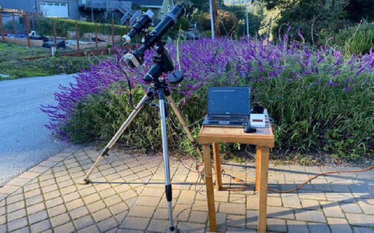

The telescope is a 3" (80mm) refractor, the smaller one is a tracking telescope used to follow guide stars to improve the accuracy of the tracking mount, it has a small guide camera attached. The main camera has a Peltier cooler to reduce the temperature of the camera helping to reduce thermal noise. The laptop is old (WinXP era), running Windows 10. The images are recorded to the laptop hard drive and saved as raw (Canon .CR2) files.